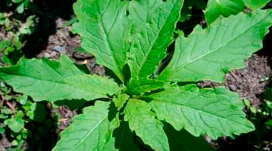

Clinica de Santa Cruz Tepexpan
Clinica de Santa Cruz Tepexpan 
| Regresar |
Clinica de Santa Cruz Tepexpan | Regresar |
Antes la medicina se curaba mediante hierbas eso era lo mas comun, pero tambien por la religion,
varias culturas se curaban diferente que actualmente vas al doctor y te dan medicamentos.
Al paso de años la medicina ha buscado modificaciones, curarnos mas rapido que antes se hacia,
varias comunidades de nuestro pais tenia chamanes para quitar las efermedades.
La ruda es buena para dolores mestruales,parasitos intestinales y
como tambien como "Proctectora" contra el "Mal del ojo".
Como hay cosas buenas tambien malas, si se toma en exceso
puede ser toxica para embarazadas.
El epazote es algo muy tradicional en nuestra cocina y medicina Mexicana.
En forma de Te es para parasitos intestinales, alivia gases y dolores estomacales.
Es un clasico en la cocina mexicana.

La arnica es una planta muy buena,
que en pomadas o alcoholados para golpes nos sirve como inflamaciones
y dolores musculares.
Los nahuas la llamaban "huitzitzilxochitl"=("flor del colibri").